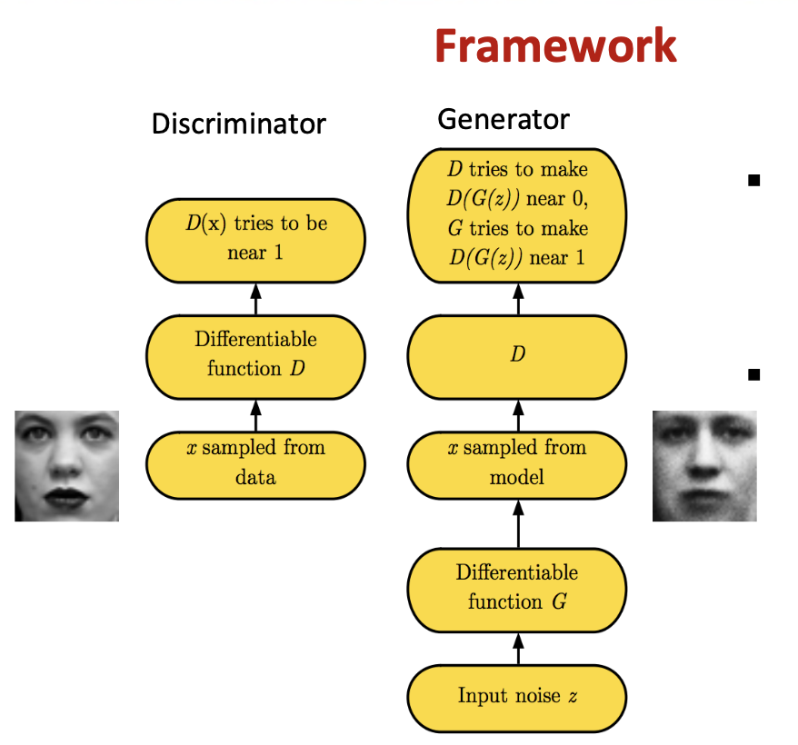
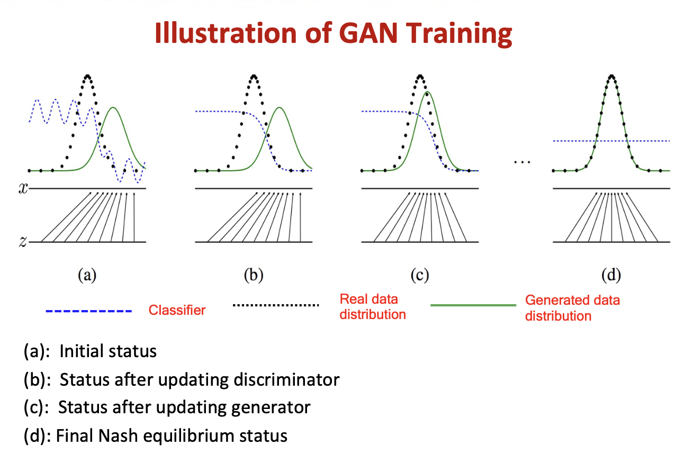
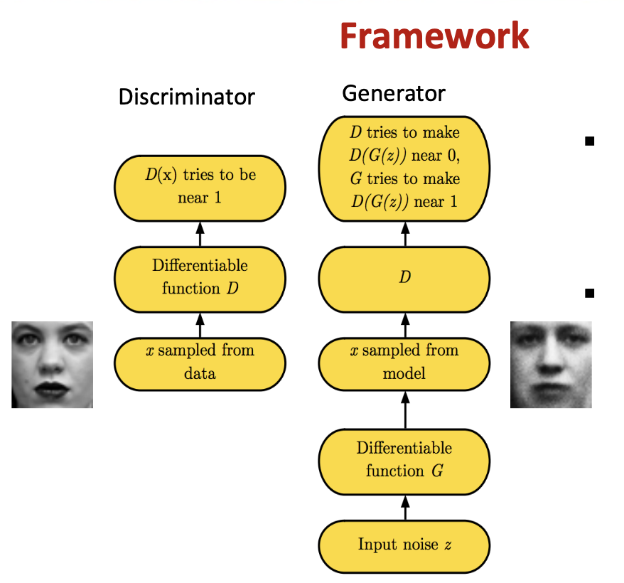
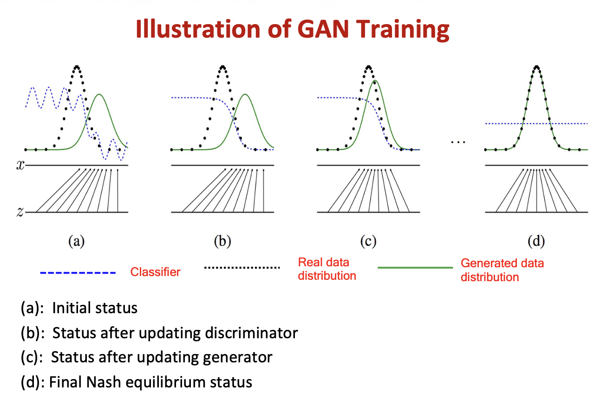

Generative models¶
A generative model is a type of machine learning model that learns the probability distribution of a dataset and generates new samples that are similar to the original data by modelling the underlying structure and patterns of the training data and can be used for tasks such as image generation, text generation, and speech synthesis.

生成学习¶
categories¶
生成学习¶
Generative Adversarial Networks, GAN, 生成对抗网络¶
Nash Equilibrium 纳什均衡思想
minmax问题 ✅ maxmin问题 ❌
Main idea¶
GAN 由生成器 Generator 和判斷器 Discriminator 兩個神經網絡所組成. Discriminator D and Generator G play an adversarial minimax game to reach a Nash equilibrium. 因為之間的對抗關係，所以稱為生成對抗網絡.
Generator takes in random noise and returns a fake image.
Discriminator takes in both real and fake images and returns probabilities with 1 representing authenticity and 0 fake
很常聽到的形容是，Generator`是負責做假鈔的人，`Discriminator 是警察檢驗是否為假鈔。
 



Model doesn’t converge G,D parameters may oscillate
Uneven progress between G, D - Mode collapse (the Helvetica scenario) G will only generate samples from a single mode。当 generator 在生产 某一种类型 就很厉害到足以骗到 discriminator，他就可能光生产这一类去了所以导致很不平衡。 - Samples lack global structure E.g., Some generated faces will have 3 eyes
a 光学习一种去了. b 缺少整体的结构¶
MiniMax Optimization¶
Update D to MAX V(D, G) when fixing G¶
Cross-Entrophy
Update G to MIN V(D, G) when fixing D¶
Deep Convolutional Generative Adversarial Networks, DCGAN¶
When reducing dimensionality, we want to keep the main structure there exists among the data.
Auto-encoder¶
Autoen-coding is a data compression algorithm. The compression and decompression functions are
data-specific,
lossy
learned automatically from examples rather than engineered by a human
Loss v.s. Information¶
The more complex the architecture is, the more the auto-encoder can proceed to a high dimensionality reduction while keeping reconstruction loss low. 架构越复杂，自动编码器就越能进行高维度降低，同时保持较低的重建损失。
An encoder with“infinite power” could theoretically takes our N initial data points and encodes them as 1, 2, 3, … up to N (or more generally, as an N integer on the real axis) and the associated decoder could make the reverse transformation, with no loss during the process.
The lack of interpretable and exploitable structures in the latent space (lack of regularity) 没有重建损失的重要维度减少往往是有代价的：潜在空间中缺乏可解释和可利用的结构（ 缺乏规律性 ）
loss function¶
When reducing dimensionality, we want to keep the main structure there exists among the data.
Irregular latent space prevents us from using autoencoder for new content generation.
The quality and relevance of generated data depend on the regularity of the latent space.
Variational Auto-Encoder, VAE, 变体自动编码器¶
Variational autoencoders, VAEs, 自动编码器 。是一个神经网络，旨在以无监督的方式学习身份函数，以重建原始输入，同时在此过程中压缩数据，从而发现更有效和压缩的表示。are autoencoders that tackle the problem of the latent space irregularity. VAE makes the encoder return a distribution over the latent space instead of a single point. VAE loss function includes a regularisation term over the returned distribution in order to ensure a better organisation of the latent space.